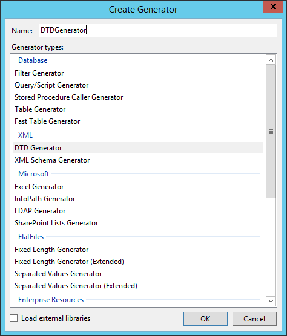
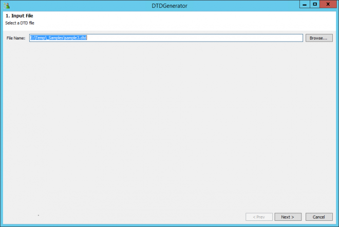
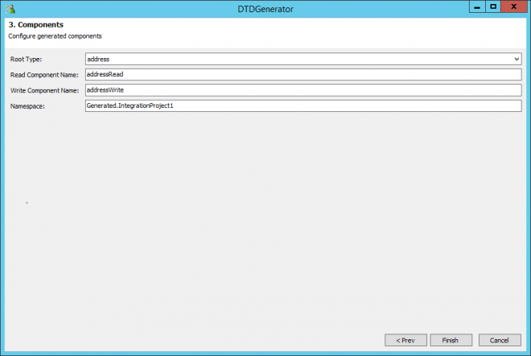

Generates read and write components based on a user-specified document type definition file (.DTD). DTD is used in the creation of XML files.
This generator creates read and write components based on a user-specified document type definition file (.DTD). DTD files are used in the creation of XML files. They contain the arbitrary parameters that provide a format for XML data.
The components that you create with this generator enforce a schema for their input values and output values.
Create a new Integration Library and choose "DTD Generator" from the "XML" section.

File Selecting page
Navigate to your ".dtd" file.

The File Selecting page is a page in the DTD generator wizard. On this page you specify a DTD file that this generator uses as a template.
The DTD file that you provide must contain a readable DTD schema.
Schema Editing page
Example
<!ELEMENT address (name,company,phone)>
<!ELEMENT name (#PCDATA)>
<!ELEMENT company (#PCDATA)>
<!ELEMENT phone (#PCDATA)>
Verify the schema

Read/Write components page
Choose your "Root Type" and rename the Components and Namespace, if necessary.

The Read/Write components page is a page in the DTD generator wizard. It lets you set properties for the read and write components.
Table: Properties on the Read/Write components page
| Property | Description |
|---|---|
| Root Type Name | The component namespace that is used to identify data from the generated component library. The namespace serves to differentiate data if you have another identically named data type. |
| Type Name | The data type that is used to handle the data from the generated components. |
| Read Component Name | The name of the read component. |
| Write Component Name | The name of the write component. |
Example
Using an example xml file you can then Read/Write with the generated components.
<?xml version = "1.0" encoding = "UTF-8" standalone = "no" ?>
<!DOCTYPE address SYSTEM "address.dtd">
<address>
<name>Tanmay Patil</name>
<company>TutorialsPoint</company>
<phone>(011) 123-4567</phone>
</address>
Support Articles
About the DTD generator
https://support.symantec.com/en_US/article.HOWTO62280.html
File Selecting page
https://support.symantec.com/en_US/article.HOWTO98695.html
Schema Editing page
https://support.symantec.com/en_US/article.HOWTO98696.html
Read/Write components page
https://support.symantec.com/en_US/article.HOWTO98697.html